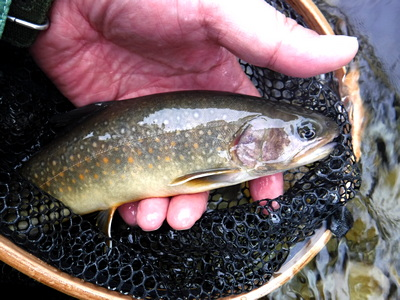
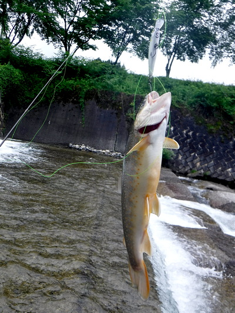
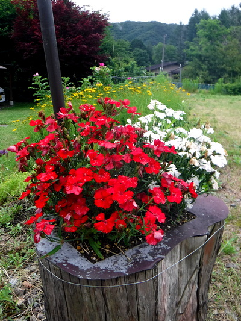
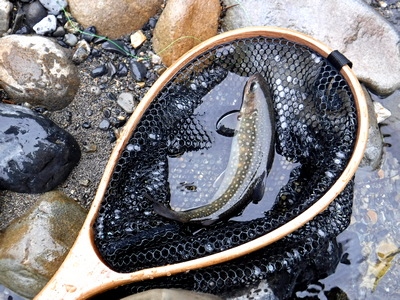
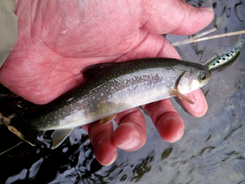
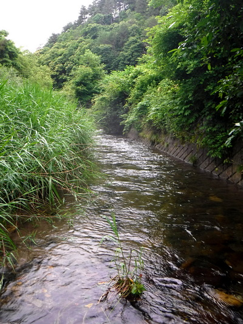

釣行日誌 故郷編
2019/07/14 梅雨の最中、高原の里川にて
梅雨はまだ明けていなかったが、日が長く、朝が早いので、６時出発にしようと、叔父が迎えに来てくれた。
一般道路を延々と叔父が車を走らせ、本流沿いの幹線国道脇のコンビニで、お弁当と叔父の分の入漁券を買う。コンビニのおばさん（おそらく僕より若い）はしっかりと僕の顔を覚えていた。（笑）
10:40頃、毎度おなじみのバス停に着く。ワクワクと、根拠の無い期待に気をはやらせつつ釣り支度をする。前回同様、叔父と二手に分かれ、僕は橋の下の堰堤に向かう。例によって鈴を鳴らし、可能な限りの大音響でクマ避け笛を吹きまくりながら、藪を抜けて河原へ降りてゆく。
水量はやや多い、前日の雨で増水したのか？ 慎重に歩みを進め、いつもの落ち込み脇の流れからチェックする。左端の小水路も増水でかなり深くなっており、何となくイワナの気配がしたが、流れが速すぎて、ゆっくり逆引きしない限り喰わせられそうになかったので、後から攻めることにする。珍しく、ラインの先にはいつもとは違う、ナチュラルカラーのシンキングミノーを結んだ。
脇の流れでは何の反応も無く、本筋の落ち込み、その向こうの淀みをチェックしていると、ミッチェル409にまさかのトラブルが再度発生した。家で修理した時には問題なかったのだが、いざ現場でキャストを繰り返していたら、以前の症状が再発したのだ。
何となく、そんな予感があったので、少々かさばったがウェストバッグの中に予備のダイワをケースに入れて持って来ていた。いったん降りてきた小径まで戻り、砂利に腰を下ろしてリールを交換する。朝一番から出鼻を挫かれたが、目の前には絶好のポイントが広がっているので、ここで退散するわけにはいかない。
速やかにリール交換を終え、ガイドにラインを通し、さっきのミノーを結ぶ。中央と対岸沿いの深みでは無反応。大きなコンクリート製のブロック脇でも沈黙が続く。
『おかしいなぁ.....？ １尾は出てもいい場所だけどなぁ.....』
と訝しみつつ、ブロックの上によじ登り、高い位置から下流へ思い切り遠投して逆引きを、ごくゆっくり行う。やや増水気味なので、鈍くさいイワナに喰い付く時間的余裕を与えねば.....。
右手の潅木の被さった主流の底近くをミノーが通過する時、いきなり激しいアタックがあった。流れの力をめいっぱい利用してしぶとく抵抗を続ける。それでも何とか寄せてきて、さっきリールを交換したあたりの岸まで誘導してからネットで取り込む。

腹部のオレンジ色のドットが綺麗なイワナだった。僕としてはまずまずの型である。愛おしく魚体に触れてその冷たさを感じ、写真を撮して水に戻す。
気を良くして同じように主流の下流遠くからミノーを引いて来ると、プルプルッと可愛い反応があり、一瞬のファイトの後で小さなイワナが姿を見せてから外れた。魚が小さくてもバラすのは悔しいものである。
こんどは上流に移動し、増水した流れが激しく落下している堰堤の滝壺をチェックする。長年の間にコンクリートが穿たれて出来た、ほんのバスタブほどの深みであるが、いつぞやここで40cm級が遡上を試みて大ジャンプを繰り返していたのを目撃したことがあるので、必ずチェックするようにしている。が、いかにシンキングミノーとはいえ、リーリングの余地はほとんど無くて、すぐにエグレから押し出されてしまう。その右隣の、緩流部の浅場も無反応に終わった。
ブロックの上を静かに歩き、回り込んで、さっきの小さな水路状の流れを上から攻める。左右を潅木に囲まれた細い筋にミノーを「置く」感じで落し、ゆっくりとリーリングしてみる。
「コツッ」と思い通りに当たり、１尾出た。

引き抜いてから、ふと上流の橋を見ると、早々と戻っていた叔父がこちらを見下ろしている。あまり自慢できるサイズではないが、狙った場所で狙ったように釣ったので、高く掲げて見せびらかした。（笑）
小さかったので、そのまま写真を撮して、フックを外して流れに戻す。少々水から出している時間が長過ぎたかな、と反省した。

車に戻る途中、畑の脇に置かれたフラワーポットに、紅白の花が綺麗に咲き誇っていた。花や植物に疎くて、名前がわからないのが残念だった。歳を重ねても、無知を恥じる機会は増すばかりである。（泣） しかし、このあたりの集落の皆さんは、この間の昇り藤（ルピナス）といい、色々な四季折々の花を育てておられるが、かなり世話や手入れが大変だろうなぁと感心させられた。僕も農家の出身だけれど、家の周りに花を植える余裕は無かったからなぁ.....。
さて、例のごとく拾い釣りが始まり、叔父と車で下流の橋へ移動する。橋詰めの空き地に停めて、２人して状況を偵察する。堤防道路の奥には釣り人らしき１台の車が停めてあった。
『おや？ お客さんがすでに来てるかな？』
と思いつつ橋の上から上流を見ると、フライの人が今まさに堰堤上から入渓するところだった。どうやら彼は釣り上がって行くらしかったので、僕は橋の下流区間を攻めることにして、叔父と別れた。叔父はさらに下流の集落の真ん中辺りをやってみると言って車に乗り込んだ。
ロッドを片手に堤防道路を進み、草ボウボウの土手を降りて行く途中で腰を下ろし、フライフィッシャーマンをしばし観察する。この川では中年～高齢のフライの人はたくさん見かけるが、彼はおそらく30代前半のように見えて、とても珍しかった。さすがにフライのキャスティングは優雅である。しかし、あまり時間をかけて叔父を待たせてもいけないので、その釣り人には気付かれないように静かに林を抜けて下流へ向かう。
ひょっとして、ここから下流の区間は今しがたさっきのフライマンが攻めていたのかもしれなかったが、ルアーなら出る魚も、まだ残っているだろう.....とたかをくくって釣り始める。
すぐに橋の下の長い深みでチェイスが見えたが、すぐに反転して消えた。
『おっ！ 居ました居ました.....。ちょっとリーリングが速かったかな?』
もう一度、やや遠くへ投げてから、ゆっくり引いてくると同じポイントでヒットした。この川での「僕の基準」からするとまずまずの１尾である。（笑）

気を良くして丁寧に攻めつつ釣り下って行くが、それ以降、パッタリと反応が無くなった。やはりさっきのフライマンが通過したのだろうか?
初めての区間で、堰堤有りブロック脇の深み有り、ポイントが多く、丁寧に攻めていると思いの外時間がかかった。何とか待ち合わせの橋にたどり着いて、護岸をへずり登って道路へ出てみるが叔父の車は見当たらない。
電話してみると、叔父は勘違いして僕が入渓した橋で待っていたらしく、現在地を告げて迎えに来てもらった。ポツンと建てられた素朴なバス停のシェルター？ で待っていると、しばらくして叔父の青いスズキが遠くから現れた。
ようやく合流出来たので、「爆釣の淵」まで移動してからいつもの草地に停め、お弁当にした。かなり歩いたので冷たい麦茶とおにぎりが美味しい。古人の言ったとおり、「空腹は最良の調味料」である。
お腹もいっぱいとなり、再びやる気満々であたりの様子を伺うと、100メートルほど上流に、餌釣りの人が１人見えた。おそらく彼も爆釣の淵を攻めたことだろうが、叔父は頓着せずに淵狙いで降りていった。僕はお得意の橋下の荒瀬目指して右岸から近づいて行く。
ドクターミノー、フローティング、チャートヤマメカラーに替えて投げ込むと、荒瀬の一番上流でアタリ、しかし乗らない。小さかったかな？
無反応が続き、釣り下って行くと、昨年秋に三連発を味わった験の良い石裏の瀬でも不発に終わった。
さらに下り、左岸側のやや深い弛みから小さいのがやっと出てくれた。掌にすっぽり入ってしまいそうな可愛い過ぎるイワナだった。（笑）

延々と良いポイントが連続するが無反応である。水温は12度。やや低いか？ そんなことはあるまい。
下流へ移動して釣っていた叔父の車が戻って来るのが見えたので、流れを横切って右岸へ移り、蘆原を掻き分けて強引に車道へ出る途中、アシに上半身を打たれ、胸にぶら下げていた拡大ルーペが落ちたので、慌てて拾ってポケットに納めた。
今度は別の谷へ移動することとし、しばしドライブが続く。街道沿いの蕎麦屋や土産物屋はどこも車がたくさん停まって賑わっていた。
さて、やって来ましたおなじみ「おじさんの淵」。いそいそと藪を掻き分け降りてゆき、枝の下から数回キャストしてみるも、ここでも沈黙。おまけに５投目くらいで対岸の枝にルアーを引っ掛けてしまう。ポイントをダメにするよりもルアーの方が大事だったので近づいて回収を試みるが、渡れない向う側の枝にしっかりフックが刺さっているようで、結局ラインを切らざるをえなかった。無念。ドクターミノーのヤマメカラー、失うとイタイなぁ.....
長い瀬をだんだんと釣り下がるが無反応は続く。そうこうしているうちに、蘆原が岸辺続く二股まで来た所で、誰かがアシの根元に引っ掛けたミノーを１つ見つけた。
『おっ！ ラッキー！』
ルアーを１つ失って１つ拾ったので、赤字決算は免れた。（笑）
下流を攻めていた叔父にもヒットが無かったらしく、今度は、ずいぶん昔に、山梨ナンバーの釣り人と出会った藪の中を瀬が流れるポイントへ車を向ける。
葦だの潅木だの、ヤブが酷くて降りるのに一苦労しそうだったので、叔父は小さな橋の上から見ていると言って、歩いて下流へ向かった。僕は蜘蛛の巣だらけのヤブを抜け、何とか水辺まで降りていった。

今度は上流に向かって、スピナーで攻めてみる。ボサの奥から、まずまずの型が一瞬出たが、もう二度と出なかった。
『意外とこっすいなぁ.....』
やはり上流から回り込んで、フローティングミノーの流し込みと極低速での逆引きを試すべきだったかもしれない。
さて、最後のラウンドは廃校前からとなり、２人で土手を越えて河原へ降りる。良い水加減だが、堰堤下の深みでは何も反応が無い。などと焦っているうちに、下流の瀬でライズが２つ発生した。
『ああ、もうあんな瀬に出ているか！』
しくこくフローティングミノーを繰り返し逆引きしてみるが、喰いつかない。
『あいつらはきっと、ミノーを喰うほど大きくないなぁ.....』
などと負け惜しみの推論で自分を納得させて、その下流のかなり長い区間を攻めるが無反応だった。
夕方６時近くになり、上流で叔父が手招きをする。未練は残ったが、今日はここで納竿となった。重い足取りで空き地まで戻り、車のトランクを開け、濡れた釣り支度を着替える。
帰途はいつもの釣り談義から四方山話までを叔父と楽しみ、帰り着いたら午前様だった。
釣行日誌 故郷編 目次へ
サイトマップ
ホームへ
お問い合わせ